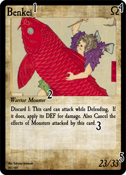

In the future, some cards may end up banned for use in competitive play. You cannot have any banned cards in your deck. A list of banned cards will be available online.
Try to keep your deck closer to 50 cards, the larger a deck is the harder it becomes to draw the cards you need. Cards additionally cannot have their backs marked in any way.
Some players may opt to use plastic sleeves to protect their cards from damage. If you use sleeves please note the following rules:
Your deck is placed face-down in this spot. You draw cards to add to your hand from the deck. If you ever have to look through your deck shuffle it and return it to this spot.
When Monster, Master and Battlefield cards are destroyed, or when you use Spells, they are sent to this zone face-up. Cards may be sent to this zone face-down, in that case they are treated as having no name or type. The Cemetery is public knowledge and players are free to look at the face-up contents and count the amount of cards in it.
This is where monsters are placed when you play them. You can have up to 6 cards in this zone. Monster cards have two states: Battle-Ready and Defending.
This is where you play your Master Card. Each player can only have 1 Master in play. If there is already a Master in play you cannot play another one.
This is where you play your Battlefield. Each player can only have 1 Battlefield in play. Battlefield cards effect both players. To use another Battlefield, send your previous one to the Cemetery.(This does not count as destroying your battlefield)
Players may decide to use fabric or paper mats to further protect their cards, game mats cannot have graphic or obscene imagery on them.

Regular Summon *
This is the easiest and most common way to Summon a monster. Simply play a α Monster card from your hand into the Monster Field in Battle-Ready or Defending positions(cont.)
Summoning β and Ω Monsters *
To summon these monsters you must tribute the appropriate amount of monsters you control before you summon the monster. β Monsters require 1 monster tribute to summon whereas Ω Monsters require 2 monster tributes. These are both counted as Regular Summons.
*: You can only do 2 Regular Summons per turn.
Alter Summoning Monsters
Some Monsters can be played onto the field without a Regular Summon. This is called an Alter Summon. Alter Summoning is usually result of a card effect. To Alter Summon simply put the Monster into the Monster Field. There is no limit on the amount of Alter Summons.
Battle Positions
There are two positions a Monster can have when summoned: Battle-Ready and Defending. A Battle-Ready Monster can attack and is played facing forwards. Defending cards cannot attack and are played rotated to the right.
Monster Cards
Monster Cards may additionally have effects that you can only activate once per turn while on the field. If you have 2 of the same Monster in play both may activate their effect. You can only activate Monster effects during your Main Step.
Master Cards
Master Cards have effects that typically alter the game state and are ongoing. The instant a Master leaves the field its effect ends. Master effects may be activated during any step,
Battlefield Cards
Battlefield Cards have effects that much like Master Cards are ongoing. Battlefield effects affect both players, not just the card’s controller. The instant a Battlefield leaves the field its effect ends. Battlefield effects may be activated during any step.
Spell Cards
Spell Cards have one-time effects. To use a spell simply play it anywhere on the Game Field and apply its effect. Once the effect is applied send the Spell to the Cemetery.
React Spell Cards
React Spell Cards are a sub-type of Spell Card that may be played at any point in a game. They are used exactly the same as Spells.
Before starting a game make sure to follow these steps (in order):
Then you may proceed with your turn, which is broken down into steps that are played in order:
Preparation
This is the first step. Used during game setup and before you draw a card. No game actions can be done at this time.
Draw
The player whose turn it is draws 1 card from the top of their deck. A player with no cards left in their deck and is unable to draw loses the game. After you draw you may activate React Spells.
Main
This is when you play the majority of your cards: You can Summon Monsters, play Masters and Battlefields and activate Spells of any type. You may also change the battle position of a Monster you control once.
Attack
During this Step Monsters can attack other Monsters, Masters and Players. Monsters must attack other Monsters before they can attack Masters and Players. Monsters can only attack once. You may activate React Spells in this step. After all monsters attack move on to the Post-Attack Step.
Post-Attack
This step is used for card effects that apply after you Attack. You may activate React Spells in this step.
End
You end your turn, the opponent now enters their Preparation Step.
Each player starts with 250 Life. You win when your opponent’s life is reduced to 0, or if your opponent is unable to draw a card during their Draw Step.
When you attack an opponent’s Monster, use this chart to figure out the outcome of that Attack.
| Battle-Ready | Defending | |
|---|---|---|
| Win | When your attacking Monster’s STR is higher then the STR of the opponent’s monster the attacking Monster destroys the opponent’s monster. The amount that your attacking monster’s STR exceeds the STR of your opponent’s monster is subtracted from your opponent’s Life as battle damage. | When your attacking Monster’s STR is higher then the DEF of the opponent’s monster the attacking Monster destroys the opponent’s monster. |
| Tie | When both Monster’s STR is equal both monsters are destroyed without any damage. | When your Attacking Monster’s STR is equal to the opponent’s monster no cards are destroyed and no damage occurs. |
| Lose | When your attacking Monsters STR is lower then the STR of the opponent’s monster the attacking monster is destroyed by the opponent’s monster. The amount that the opponent’s monster’s STR exceeds the STR of your attacking monster is subtracted from your Life as battle damage. | When your attacking Monster’s STR is lower then the DEF of the opponent’s monster The amount that the opponent’s monster’s DEF exceeds the STR of your attacking monster is subtracted from your Life as battle damage. |
When you attack, you may optionally choose to attack your opponent’s active Master. When you attack this way the attacking monster’s STR is dealt as damage to that Master’s HP. You must attack and destroy all defending Monsters before you can attack a Master. Master Cards are destroyed when their HP reaches 0.
When there are no Monsters to Attack you may instead attack the opponent directly. When you attack this way the attacking monster’s STR is dealt as damage to the Player’s life.
How to Play
To play a Master Card simply put it face-up from your hand into the Master Zone. If you already control a Master you cannot play an additional Master until the current one leaves the field.
How to Use
Master card effects can be used as many times per turn as you wish, or have effects that go on continuously.
HP (Health Points)
In the top right of a Master card is it’s HP. When a Monster battles it may choose to battle a Master, in which case it will lose HP. When a Master’s HP reaches 0 it is destroyed.
How to Play
To play a Battlefield card simply put it face-up from your hand into the Battlezone. To use another Battlefield, send your previous one to the Cemetery. (This does not count as destroying your battlefield)
How to Use
Battlefields have effects that are continuous (ongoing) and affect both players.
Both Master and Battlefield cards effects end the instant they leave the field.